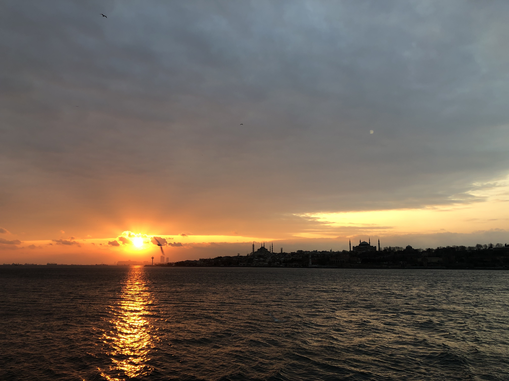
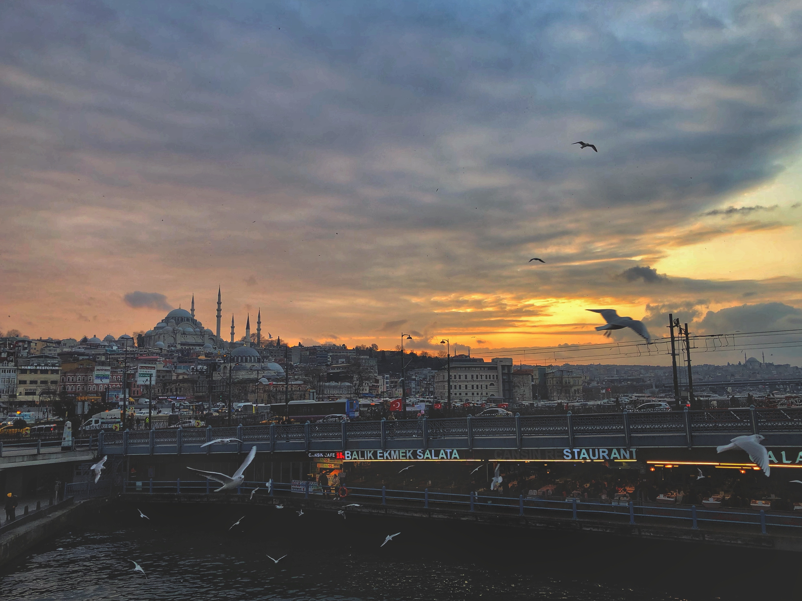

Photography gives you the opportunity to use your sensibility and everything you are to say something about and be part of the world around you. In this way, you might discover who you are, and with a little luck, you might discover something much larger than yourself.
Contents
The Golden Hour
State Of Mind
The Golden Hour
It's warm
The golden hour is all about light. The temperature of the light during this time is, as the name suggests, in the yellow range when it comes to the light spectrum. Without delving too deeply into your AP Chemistry textbook, light has a spectrum of temperatures that correspond to different colors of light. Remember ROY G BIV? On one side of the spectrum, you have high-temperature blue light, and on the other end, you have low-temperature red light. During the golden hour, the temperature is in the yellow range, which gives the light that coveted, golden hue.
It's diffused
When the sun is near the horizon, its light has to travel through more atmosphere than at other points in the sky. That atmosphere acts as a giant diffuser, thus reducing and softening the intensity of direct light. This creates a more even light, so the difference in correct exposure between your darks and lights is less, meaning it's far easier to capture a more evenly exposed photo. It's as if the whole sky is one giant light box, only better. Furthermore, all that atmosphere the light has to travel through filters out the blue light and makes the light appear more reddish.
It's directional
When the sun is very low in the sky, its angle is more drastic in relation to the earth, making shadows longer and softer. Having long shadows in your shot helps show all three dimensions of the world when you're trying to capture them in a two-dimensional space. Also, because your exposure is more even, the sky and whatever else is in the background, your middle ground, and the foreground can all be clearly defined and properly exposed, which creates a greater sense of depth. You can also use the direction of the sun to create specific effects and to highlight textural details.

21 February 2020. Istanbul, Turkey, Bosphorus Strait

21 February 2020. Istanbul, Turkey, Golden Horn
State of Mind
Be Prepared but Flexible
Always carry your camera! Sounds silly to say, but it's an essential ingredient of any great shot. If you have no camera, you have no shot at all!
You may not think of your state of mind as "basic photography information", but I think it's crucial to taking great pictures.
All too often, we photographers get a preconceived notion about what we're going to shoot that day. We decide that today is the day for us to shoot horses. Worse, we see a particular image in our minds ("I want to shoot a red barn against a blue sky, with some horses roaming in the front"). When we do that, we can spend the day driving around the countryside "looking" for that image, which may prove to be elusive (all the horses are in the barn that day!). End result? We've wasted the day.
Instead, be flexible. Sure, drive out into the countryside! But be open to what you find there. One of the best pieces of photographic advice I've received was at a talk by National Geographic photographer, Steve McCurry. Paraphrased in my own words, it was:
Look for where the great light is. What's in that light? Shoot that!
Be Patient
State of mind is important, and patience is key. Landscape photographers must be patient enough to wait for the right light. Portrait photographers must be patient enough to wait for the right expression. Product and macro photographers who work in a studio have control over their subject and lighting, but must still have the patience to fine-tune their images.
Have the patience to persist until you get it right, and until you find that "wow" image. When you think you've taken all the images possible of a scene, you are often just getting started. Push through the block of thinking there's nothing left, and keep shooting. You may surprise yourself with the results!
Connect with Your Emotions
My number one rule (okay, one of them!) is to shoot what you're passionate about. If you're not reacting emotionally to your subject matter, then surely the viewer of your image won't either. If you're not feeling excited (or stimulated by some strong emotion) when you look through the viewfinder, then don't press the shutter button! Don't you have enough ho-hum images clogging up your hard drive already?